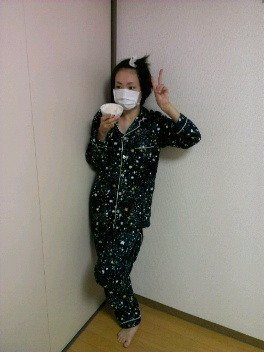

実は風邪ひいてました！
咳でるのほったらかしにしてたら悪化して、んでお母さんが来てくれて、すっかり治りました〜ヽ(・∀・)ノ
あはっ
風邪はほっといたらダメだね...

撮影:お母さん
宇宙柄パジャマと新米とすっぴんいこま。
ピースが似合わないっ(笑)
コメント読ませて頂きました！
みなさん暖かいコメントありがとうございます。
ただいこまがちょっとだけ思った事を書きます。
私は、何を言われようと私は私。他の誰にもなれない
乃木坂４６は世界でたった一つだけのグループ。
そこに集まった３４人は世界でたった一人しかいない
比べたりするのは普通の事
乃木坂４６はＡＫＢ４８さんのライバルグループとして誕生しました。
だから似ていたりするかも知れないけど、メンバーも違うし、内容も、システムも違います。
前に立つ人は、実力も人気もある人が立つべきかもしれない。
私は立ち位置に自分の実力が追い付いていません。
私はアイドルになって一年
もう甘えは許されない。
しかしまだまだ学ぶ事が多い。
３４人で乃木坂４６
それはメンバーみんなが思っていること。
私はみんなを代表して乃木坂４６とはこういうグループなんだよと広めて行きなさいと言われたんだと思います。
でも私は大丈夫！
だってみんながいるから!!そしてこんなに優しいいこまふぁむかまいる。
３４人になって、これからいろいろ切磋琢磨してもっと上を目指そう。
しかしっいこまも好きになってもらいたい←
いつかライバルと言ってもらえるように。
なんか暗くなってしまってすいません。
私はちゃんと理解しているし、知っている。
あと私はもう泣かない。
泣いたって悪い事しか起こらない。
途中で逃げ出したり、倒れたりする自分にあきれました。
いつかみんなで嬉し涙を流せるように頑張らないとね
でも人間はそう簡単に強くなる生き物じゃない。
弱音を言ってしまう時があると思います。
その時はどうかみなさん助けて下さい。
私にとってみなさんは必要なんです。
上から目線ですいません。
あとネガティブですいません...
覚悟をもってやらせて頂きます。
これからも乃木坂４６をよろしくお願いします!!
あと明日からは切り替えていつも通りないこまで頑張ります!!
ではっ
へばなっ!!!!!!!!!!